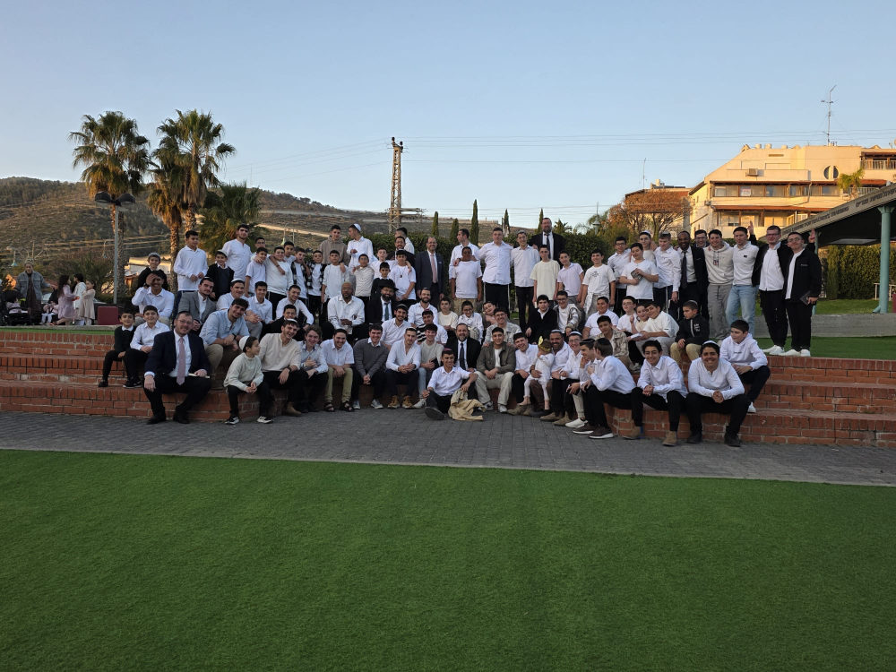
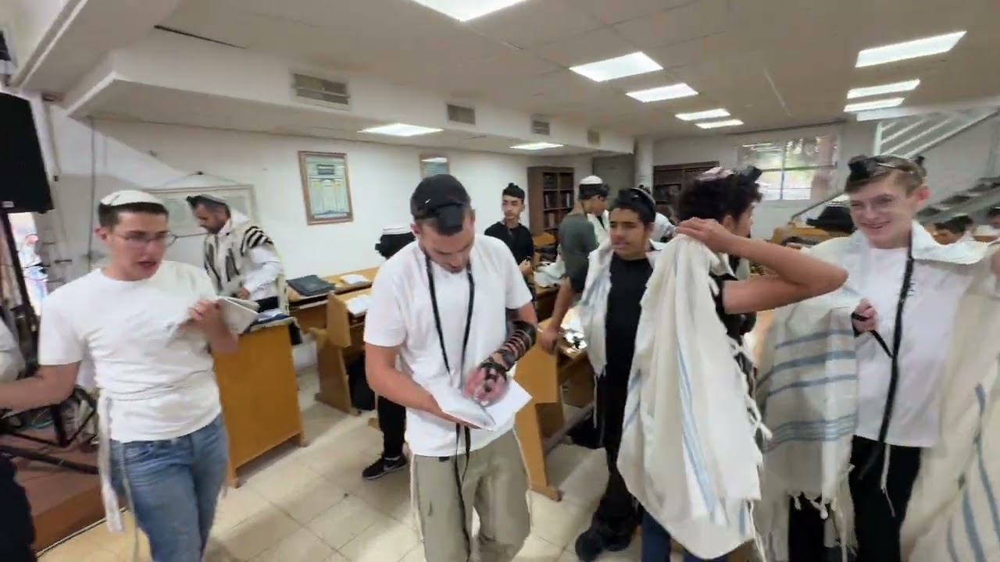

תורה·ערכים·מצוינות
ישיבה תיכוניתקריית אתא
בית של תורה, צמיחה ומשמעות — שבו כל נער גדל לאדם שלם, מאמין ומאמין בעצמו.
גדלים אצלנו
קצת עלינו
בית שמאמין בכל נער
ישיבה תיכונית קריית אתא היא בית חינוכי דתי-לאומי ברשת החינוך הממלכתי-דתי, לכיתות ז'–י"ב, הפועל ברוחו של מרן הרב קוק זצ"ל. אנחנו מחנכים מתוך אמונה שהתורה והחיים, הקודש והחול, אינם שני עולמות נפרדים אלא משלימים ומאירים זה את זה.
בישיבה אנו משלבים לימוד תורה מעמיק ואהבת ה' יחד עם מצוינות לימודית, בגרות מלאה ופיתוח הכישרון הייחודי של כל תלמיד. אך מעל הכול — אנחנו מאמינים בכל נער ונער. רואים את האדם שמאחורי כל תלמיד, ומלווים אותו ביחס אישי וחם בכל צעד בדרכו.
כאן נער לא נמדד מול אחרים, אלא מול עצמו — ומקבל את הכלים, האמון והאהבה לצמוח ולגלות את האור הגדול שטמון בתוכו.

מה שמנחה אותנו
ארבעת עמודי התווך
החזון שלנו נשען על ארבעה עמודים שמלווים כל תלמיד לאורך שנותיו בישיבה.
תורה
לימוד תורה מתוך אהבה ושמחה. בית מדרש חי, חברותות וסדר ערב — חיבור עמוק אל מקורותינו ואל רבותינו, שמלווה את התלמיד לכל חייו.
ערכים
חינוך לאהבת ה', אהבת ישראל ואהבת הארץ. אנו מטפחים מידות טובות, נתינה, אחריות ומנהיגות — ומגדלים אנשים שתורמים לסביבתם ולעם ישראל.
מצוינות
רמה לימודית גבוהה ובגרות מלאה, תוכניות מצוינות מדעית-טכנולוגית, ופיתוח הכישרון הייחודי של כל תלמיד עד למימוש מלא של הפוטנציאל שלו.
בריאות הנפש
ליווי רגשי אישי ויחס חם. צוות מסור וכלים לחוסן ולצמיחה אישית — כדי שכל נער ירגיש נראה, נשמע ובטוח לגדול בקצב שלו.
יום בישיבה
קודש וחול בקצב אחד
היום בישיבה משלב קודש וחול בקצב מאוזן ומלא חיים — מתפילה ולימוד תורה בבוקר, דרך לימודי הליבה והבגרות, ועד לפעילות חברתית, חוגים וסדר ערב.
תפילה ופתיחת היום
פתיחת יום מתוך התרוממות והכוונה.
לימודי קודש
גמרא, תנ"ך ומחשבת ישראל בבית המדרש.
לימודי ליבה ובגרות
לימוד איכותי לבגרות מלאה.
פעילות חברתית
גיבוש, שיח אישי וצמיחה חברתית.
חוגים והעשרה
נגרות, חקלאות, קונדיטוריה והעשרה בטכנולוגיה.
סדר ערב
לימוד תורני מעמיק לתלמידים שבוחרים בכך.
המסלולים שלנו
דרך לכל תלמיד לצמוח
מגוון רחב של מסלולים ותוכניות — תורניים, לימודיים וטכנולוגיים — שמאפשרים לכל תלמיד למצוא את הדרך שבה הוא יצמח ויצליח.
תוכנית תורנית — סדר ערב
לימוד תורני מעמיק בשעות הערב, בחברותות ומתוך אהבת תורה — למי שרוצה להוסיף ולגדול בעולמה של תורה.
סופר סת"ם
לימוד מלאכת הקודש של כתיבת סת"ם — מסורת עתיקה ומקצוע לחיים, מתוך דקדוק, יראה ואהבה.
פייטנות
שירת הקודש, מסורת הפיוט והחזנות — חיבור עמוק אל לב התפילה ואל אוצרות מורשת ישראל.
מגמות לבגרות
בגרות מלאה ואיכותית, עם ליווי אישי לכל תלמיד, במגוון מגמות: פיזיקה · ביולוגיה · מדעי המחשב · אלקטרוניקה · הנדסה יישומית · ציונות דתית.
עתודה מדעית-טכנולוגית (עמ"ט)
תוכנית מצוינות המכינה את התלמידים לעולם המדע, ההנדסה והטכנולוגיה — ולתרומה משמעותית בצה"ל ובחברה.
הכנה למגשימים
מסלול ייעודי המכין את התלמידים לתוכנית הטכנולוגית-צבאית "מגשימים" — שילוב של מצוינות, ערכים ושליחות.
אומנות ועיצוב גרפי
סטודיו יצירה שבו תלמידים לומדים לעצב, לצייר ולספר סיפור חזותי — ומגלים את הכישרון האמנותי שטמון בהם.
נערי ברזל
תוכנית ייחודית של כושר גופני, חוסן נפשי ומיינדפולנס — שבונה גוף חזק, ראש שקט ונפש איתנה.
הרמב"ם היומי
לימוד יומי קבוע בהלכות הרמב"ם, טיפין-טיפין — שמרחיב את עולם ההלכה ובונה הרגל של קביעות.
לימוד עם אברכים
חברותא אישית עם אברכי כולל — עומק בלימוד, דמות להתחבר אליה וחום אמיתי של בית מדרש.
קורס אימון יהודי (קואצ'ינג)
כלים מעשיים מעולם הקואצ'ינג לצד עומק יהודי — להכרת עצמי, הצבת מטרות וצמיחה אישית.
התנדבות בקהילה
יציאה אל הקהילה ונתינה אמיתית — מתוך אמונה שערכים לומדים לא רק בספר, אלא במעשה.
פרויקט הנצחה
הנצחת דמויות ומורשת מתוך אחריות ושייכות — שמחברת את התלמידים אל השורשים ואל הערכים שמאחוריהם.
הצוות שלנו
מאחורי כל תלמיד — צוות שלם
צוות מסור של רבנים, מחנכים ואנשי מקצוע שרואים בכל נער עולם ומלואו, ומלווים אותו בלב שלם.
הרב יהונתן בלסן
ראש הישיבהמוביל את הישיבה ברוח של תורה, אהבה ואמונה בכל תלמיד.
מאור תורג'מן
מנהל הישיבהמוביל את החזון והעשייה היומיומית של הישיבה, ומחבר תורה, ערכים ומצוינות לכל תלמיד.
הרב יוסי אוחנה
מנהל חטיבת הבינייםמלווה את תלמידי חטיבת הביניים בכניסתם לעולם הישיבה — בחום, בסבלנות ובאמונה בכל נער.

צוות רבני ומחנכי הישיבה
ר"מים, מחנכים וצוות הליוויהצוות שעומד מאחורי כל תלמיד — מלווים אותו בלב שלם בכל צעד בדרכו.
הישיבה בשבילי
מילים של בית
תלמידים, בוגרים והורים — על הבית שמצאו אצלנו.
הישיבה בשבילי היא מקום לגדול בתורה, למצוא חברים אמיתיים ולגלות את הכוחות שבי.
מצאנו בית חם שרואה את הילד שלנו, מאמין בו ומצמיח אותו. אנחנו מודים על כל יום.
יצאתי מהישיבה עם אהבת תורה, בגרות מלאה, ובעיקר — עם אמונה בעצמי. זה נשאר איתי לחיים.
מבית המדרש שלנו
רגעים מהישיבה
הצצה חיה אל רוח הישיבה — שיעורי תורה, פרשת שבוע ורגעים מהחיים בבית המדרש. הכול מתעדכן ישירות מערוץ היוטיוב שלנו.
מה חדש בישיבה
סיכומים שבועיים ועדכונים
עדכונים, אירועים וניוזלטרים — כדי שתהיו תמיד שותפים ומעודכנים.
תורה שאפשר לקחת הביתה
מאמרים מבית המדרש
שיחות ראש הישיבה, ערוכות כמאמרים — רעיון אחד חזק לכל שבוע. לקרוא בחמש דקות, להתחזק להרבה יותר.
גלריה
רגעים מהחיים אצלנו
תמונות מבית המדרש, מהכיתות, מהאירועים ומהפעילויות — רגעים אמיתיים, מתעדכנים ישירות מהערוץ. לחיצה על תמונה פותחת את הסרטון.
מקומכם שמור
להצטרף למשפחת הישיבה
רוצים לשמוע עוד, להתרשם מקרוב או להירשם? השאירו פרטים ונחזור אליכם — או דברו איתנו ישירות בוואטסאפ ובטלפון.
דברו איתנו
נשמח להכיר
נשמח לשמוע מכם, לענות על כל שאלה ולהכיר. הצוות שלנו זמין עבורכם.
- טלפון04-843-9870
- אימיילyeshivatkata@gmail.com
- שעות מענהא'–ה' · 8:00–15:00